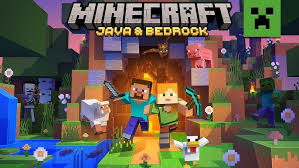
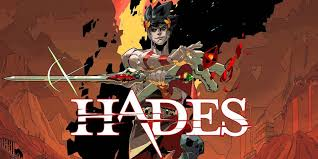
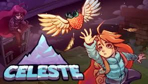
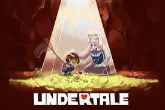
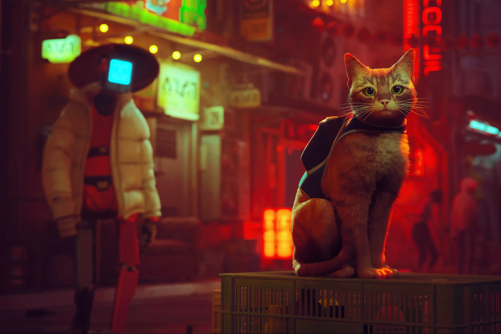
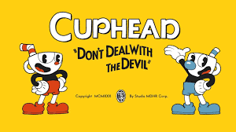

Indie Games

Minecraft
by Mojang

Hollow Knight
by Team Cherry

Stardew Valley
by ConcernedApe

Hades
by Supergiant Games

Outer Wilds
by Mobius Digital

Celeste
by Extremely OK Games

Undertale
by Toby Fox

Cult of the Lamb
by Massive Monster

Stray
by BlueTwelve Studio

Little Nightmares
by Tarsier Studios

Shovel Knight
by Yacht Club Games

The Binding of Isaac
by Edmund McMillen

Cuphead
by StudioMDHR